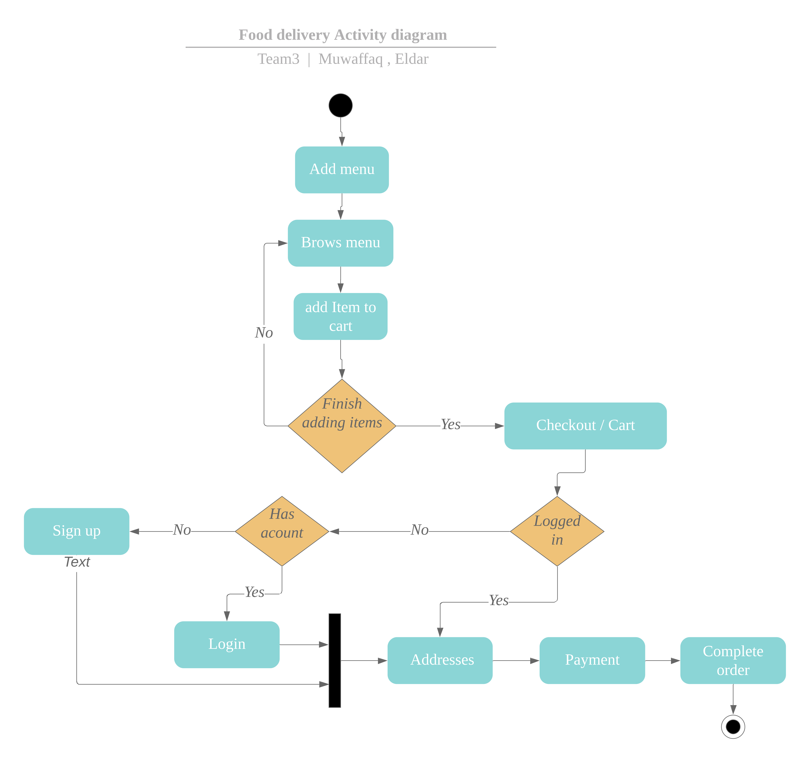
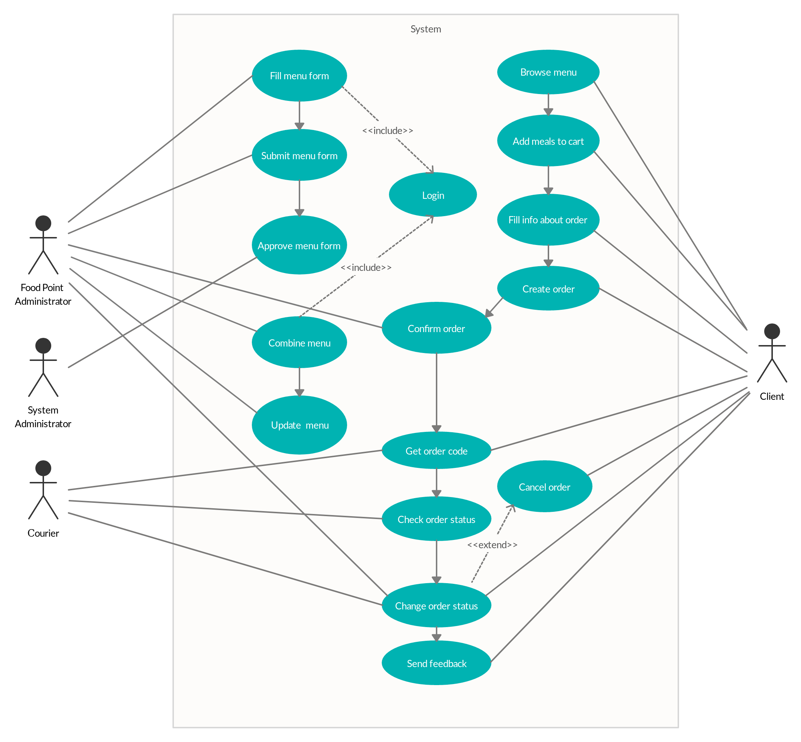

README code image  Food Delivery Use Cases =======================
| Use Case Name | Order Process |
|---|---|
| Actors | Client, Food point administrator |
| Pre-conditions | Meal plans are shown in the system |
| Flow of events | 1. Client browses menu |
| 2. Client adds meals to delivery cart | |
| 3. Client adds info about contacts, place and time delivery | |
| 4. Client makes checkout for all items in the cart | |
| 5. New order created and will be shown in the cafe dashboard | |
| 6. Food point administrator confirms the order | |
| 7. Client gets confirmation about the order | |
| Post-conditions | Order will be processed by the food point |
| Alternative flows and exceptions | The food point administrator rejects the order of the client. The |
| client will be notified about rejection |
| Use Case Name | Order Cancellation |
|---|---|
| Actors | Client Food point Administrator |
| Pre-conditions | Order is created by client |
| Flow of events | 1. Client receives unique identification № of order |
| 2. Client enters № of order to check-order web pages | |
| 3. Current status of order and cancel-button is displayed on page | |
| 4. Client cancels order by cancel-button | |
| 5. Food point Administrator gets notification about cancelling | |
| Post-conditions | Order is cancelled |
| Alternative flows and exceptions | Order can’t be cancelled if it already has status “delivering” ot |
| if it is than 1h before delivery time |
| Use Case Name | Checking order status |
|---|---|
| Actors | Client |
| Pre-conditions | Order is created by client |
| Flow of events | 1. Client receives unique identification № of order |
| 2. Client enters № of order to check-order web pages | |
| 3. Current status of the order is displayed on page | |
| Post-conditions | Client gets to know about current order status |
| Alternative flows and exceptions | Unique code of order was not generated – order can’t be checked |
| Use Case Name | New menu meals uploading |
|---|---|
| Actors | Food point administrator, System administrator |
| Pre-conditions | Food point is registered in the system |
| Flow of events | 1. Food point administrator fill the menu meals form |
| 2. Food point administrator submits the meals form | |
| 3. System administrator approve the meals form | |
| Post-conditions | New food point meals uploaded in the system |
| Alternative flows and exceptions | The system administrator rejects submitted meal plan. The food |
| point administrator receives the notification. |
| Use Case Name | Current menu meals choosing |
|---|---|
| Actors | Food point administrator |
| Pre-conditions | Food point is registered in the system, menu meals uploaded by food |
| point adminisrator and approved by the system administrator | |
| Flow of events | 1. Food point administrator combines the menu from the approved meals |
| list | |
| 2. Food point administrator submits the menu form | |
| Post-conditions | Current food point menu updated |
| Alternative flows and exceptions | There are no already uploaded and approved meals in the system - nothing |
| can be chosen for current menu. |
| Use Case Name | Client feedback processing |
|---|---|
| Actors | Client |
| Pre-conditions | Order in the “delivered” status, the user on the “Check Order” page |
| Flow of events | 1. The system asks the client about the quality of food (like/dislike) |
| 2. Client makes a choice (like/dislike) | |
| 3. Client leaves a comment in the textbox | |
| 4. Client submits review-form | |
| Post-conditions | Review information appears on “Order Monitor” page of the system next to |
| Alternative flows and exceptions | the client’s order. User will not provide any review about its quality |
| Use Case Name | Login |
|---|---|
| Actors | User |
| Pre-conditions | None |
| Flow of events | 1. The system requests that the actor enter email |
| 2. User enter password. | |
| 3. User press login button | |
| Alternative flows and exceptions | If User enter an invalid name and/or password, the system display an error message |
| The user can choose to either return to the beginning of the flow or cancel the login |
| Use Case Name | Sign up |
|---|---|
| Actors | User |
| Pre-conditions | User is not loggged in |
| Flow of events | 1. User types a user name o |
| 2. User types a password. | |
| 3. User retypes the password | |
| 4. User Submits | |
| 5. System registers the new player with the give parameters (user name, password) | |
| Post-conditions | User remains signed in |
| Alternative flows and exceptions | 1. System finds the user name is already in use and displays error message |
| 2. System finds the two passwords are not identical and displays error message |

Customer - an entity that uses the Food Delivery system for their business. Food points are customers in this case.
Client - a person who orders food from the system.
Food point - any food court which uses Food Delivery system for their business and makes delivery to the clients.
Courier - employee of food point who delivers food to the clients.
Food point Administrator - an employee of food points who is responsible for maintaining the system for their use
System Administrator - a person who adds new food point entities to the system and approves food points’ meal plans in the system
{kind=link}